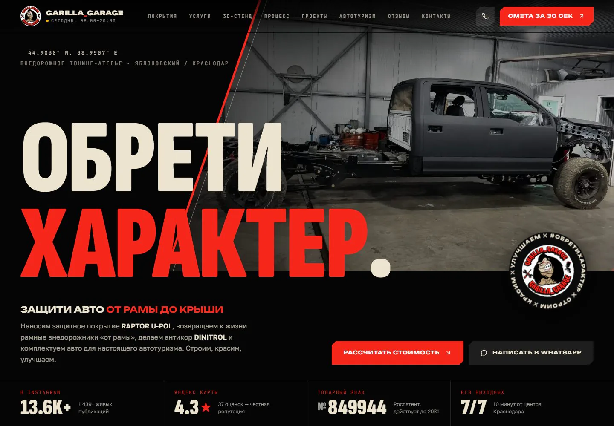
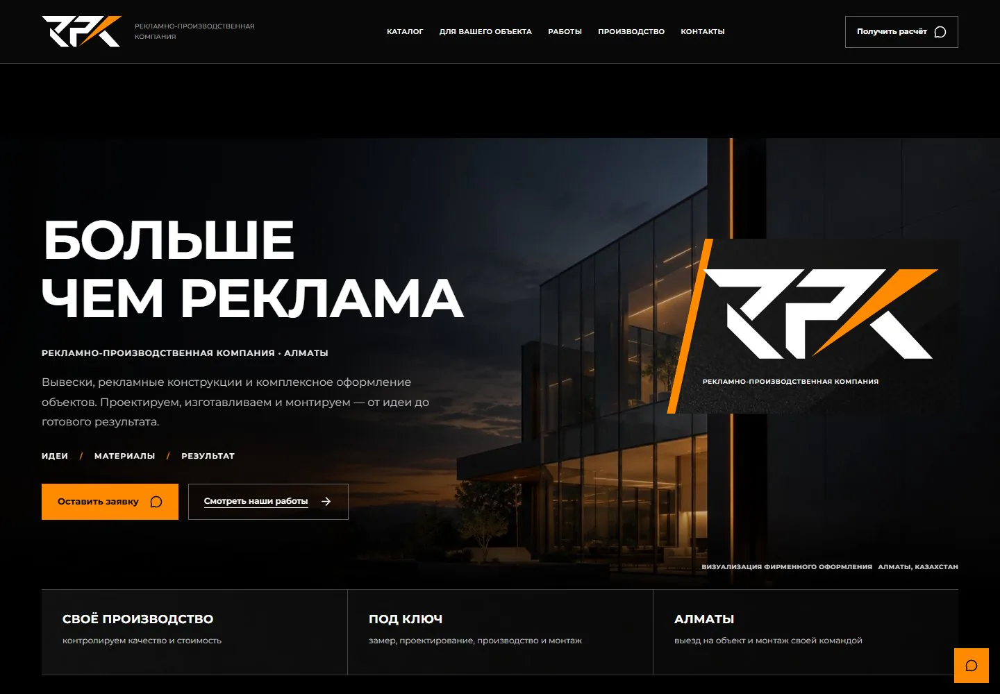
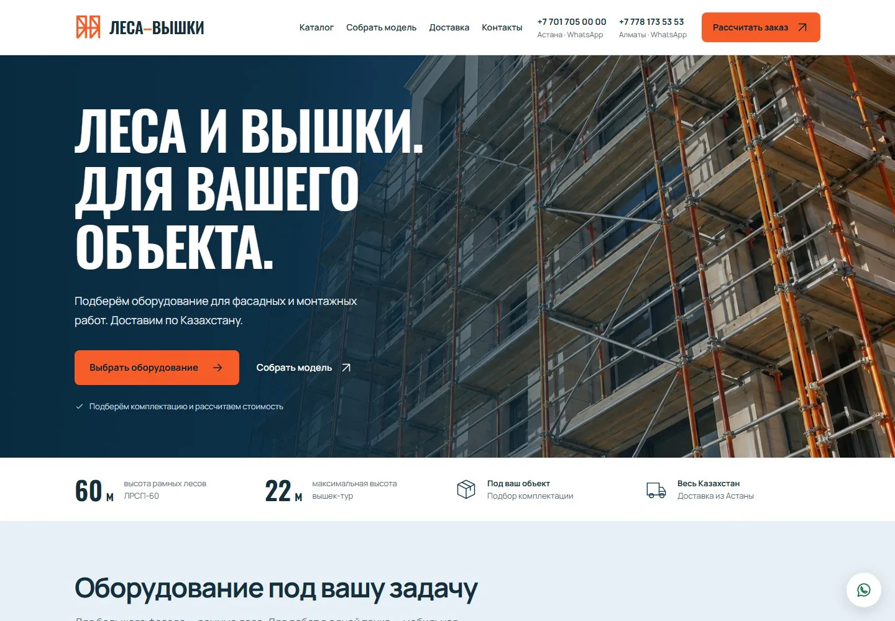
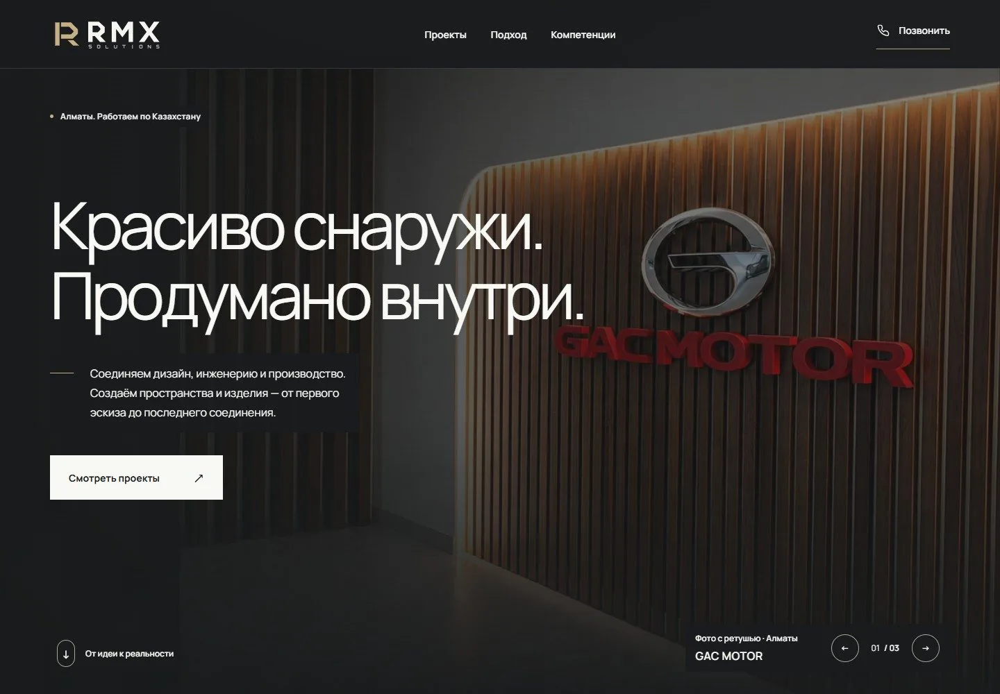
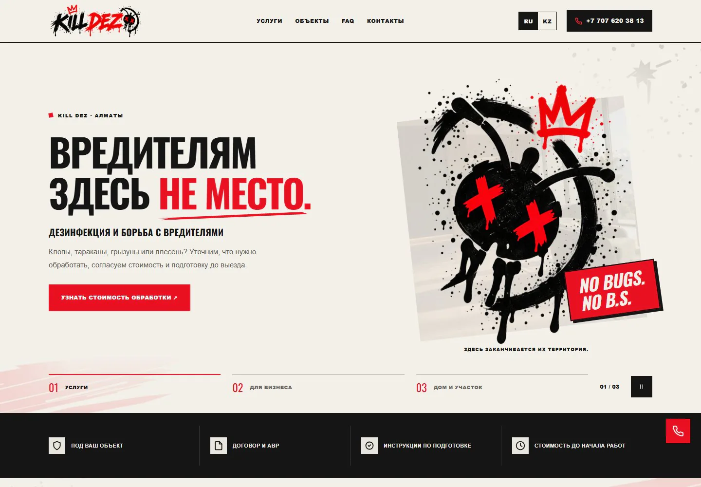
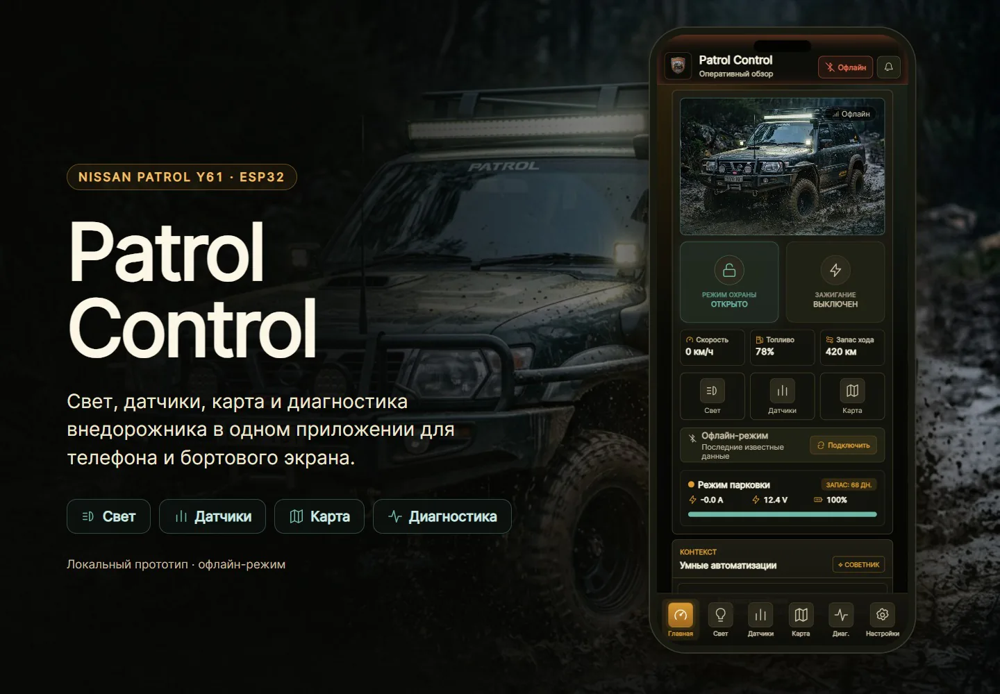
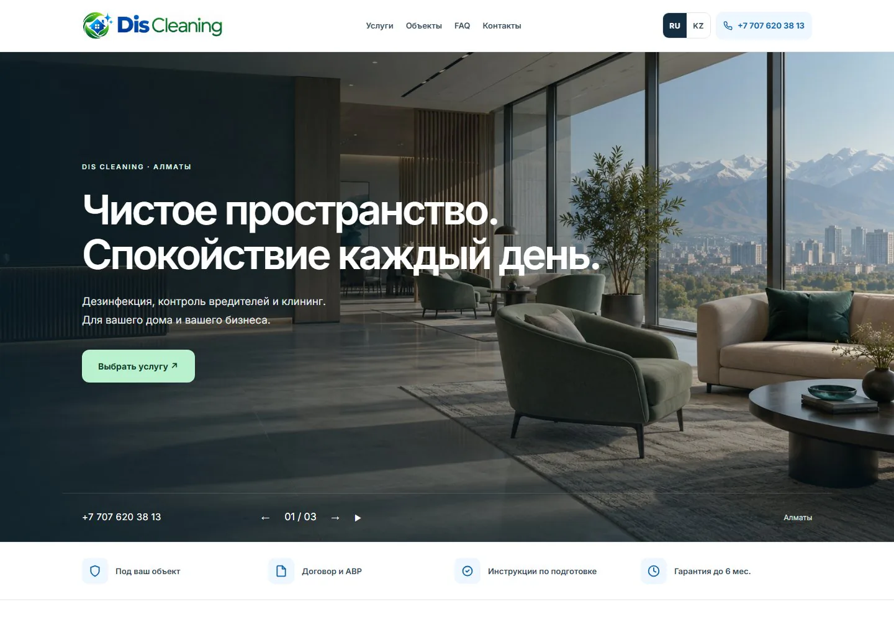

Избранные проекты
Сайты, интерфейсы и продукты
От идеи до работающего результата: 14 кейсов с задачами, решениями и экранами.

Сайт с 3D-стендомGARILLA_GARAGE
Тюнинг-ателье для рамных внедорожников: 3D-разбор и расчёт сметы.
 Движок 3D-туров и редактор
Движок 3D-туров и редакторSensata 360°
Свой WebGL-движок туров 360° для пяти ЖК и редактор Studio.

Корпоративный сайтRPK
Рекламное производство — от каталога технологий до готовых объектов.
 Сайт с каталогом
Сайт с каталогомAnkor
Редизайн бренда: продукты, сравнение и удобная корзина.
 Магазин с 3D-калькулятором
Магазин с 3D-калькуляторомВоду в сток
Водостоки под размеры дома: 3D-схема, комплект и расчёт.
 Интерактивный каталог
Интерактивный каталогSAF Avenue
Выбор квартир через визуальный каталог и параметры планировок.
 Сайт с 3D-конструктором
Сайт с 3D-конструкторомIzum Design & Production
Сайт швейного продакшна на сетке знака и 3D-конструктор мерча.

Сайт с конфигураторомЛеса-вышки
Каталог оборудования с интерактивной сборкой конструкции.

Корпоративный сайтRMX Solutions
Дизайн, инженерия и производство — с 3D-моделью в браузере.

Сайт услугKILL DEZ
Выразительная подача сервиса по борьбе с вредителями.

ПриложениеPatrol Control
Бортовой интерфейс для света, оборудования и телеметрии.
 Учебное приложение
Учебное приложениеQysym Lab
Интерактивная лаборатория к школьному исследованию о давлении.
 Сайт недвижимости
Сайт недвижимостиSAF Avenue — лендинг
Презентационный сайт жилого комплекса на двух языках.

Корпоративный сайтDis Cleaning
Услуги дезинфекции и клининга для дома и бизнеса.